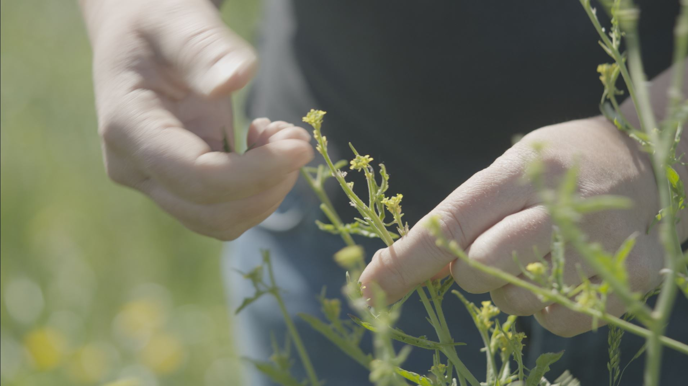
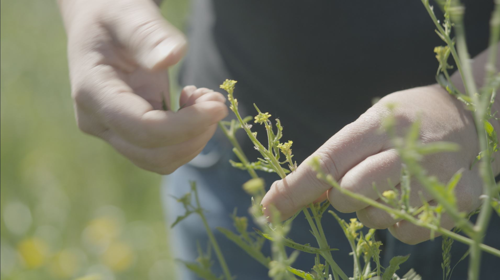
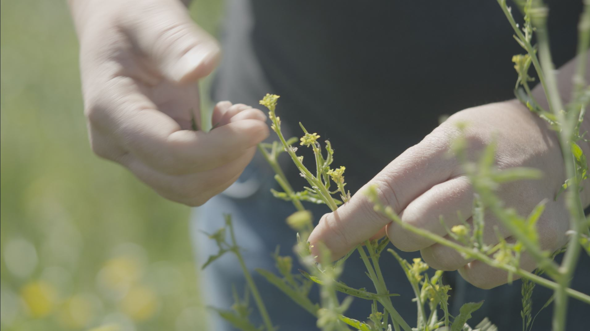

Niché sur les hauteurs du pays d'Excideuil en Périgord vert, le Pré aux Abeilles s'intègre dans un paysage de prairies parsemées d'étangs, sillonné de rivières et de vallées forestières. Au cœur d'une nature généreuse, nous y élevons des abeilles et y cultivons, récoltons et transformons des plantes aromatiques et médicinales.
Notre production est certifiée en agriculture biologique par Certipaq.
Miels - Aromates – Tisanes
lepreauxabeilles@gmail.com
2200 route des Coteaux
24160 Clermont d'Excideuil
Visites sur rendez-vous uniquement
EI Le Pré aux Abeilles
Siret : 938 105 913 000 17
Code APE : 0149Z

À l'image de notre projet agricole, ce site est en cours de construction et s'enrichira au fil des saisons :)